Limited Editions · signiert, nummeriert, traycased · nach dem Revelations-Archiv
Die Limitierten
Seit der ersten signierten Damnation-Game-Kassette von 1985 begleitet fast jedes Werk eine limitierte Ausgabe: nummeriert oder mit Buchstaben, in Leder, Schubern und Holzboxen — vom 25-Pfund-Schuber bis zur 5.000-Dollar-Kassette.
Die Romane
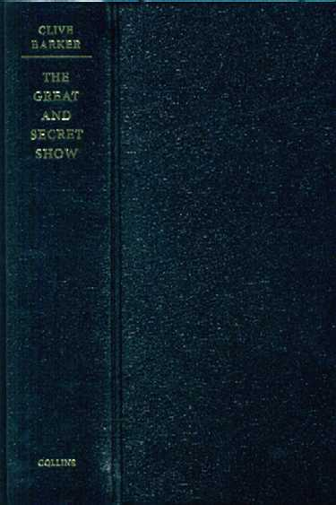
Worum es geht
Von The Damnation Game (1985) bis zu den Suntup-Bänden von 2022 erscheint fast jeder Roman auch als Vorzugsausgabe: signiert und nummeriert, dazu die raren Buchstaben-Exemplare, die nie in den Handel gehen. Das Revelations-Archiv verzeichnet sie samt Auflagen, Originalpreisen und Sammlerwerten.
Aus dem Archiv
-
Den Anfang machte Weidenfeld & Nicolson 1985: 250 signierte, nummerierte Exemplare von The Damnation Game, leinengebunden im Schuber für 25 Pfund — der Archiv-Preisführer notiert sie heute bei 250 bis 300 Dollar.
Weidenfeld & Nicolson, UK · 1985
-
Das Markenzeichen von B.E. Trice aus New Orleans: Schuber mit ausgestanztem Fenster, durch das Barkers eingelegtes Artwork sichtbar wird — bei Galilee, Coldheart Canyon und den ersten beiden Abarat-Bänden.
B.E. Trice, USA · 1998–2004
-
Die aufwendigste Neuausgabe kam 2022 von Suntup Editions: Imajica in drei Stufen bis zur 26er-Buchstabenausgabe — zwei Bände in Büffelleder-Kassette für 4.995 Dollar, restlos ausverkauft.
Suntup Editions, USA · 2022
-
Auch Deutschland sammelt mit: Edition Phantasia band Spiel des Verderbens (300 Ex., seidenbezogen im marmorierten Schuber), Der Dieb der Zeit und Das Sakrament — und Heyne legte die Abarat-Bände als nummerierte 2.000er-Schuberausgaben auf.
Edition Phantasia · Heyne · 1987–2005
Ausgewählte Ausgaben
Klick vergrößert das Cover
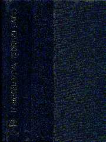
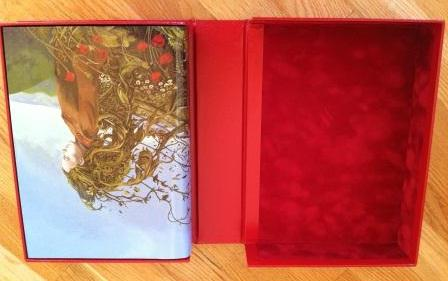
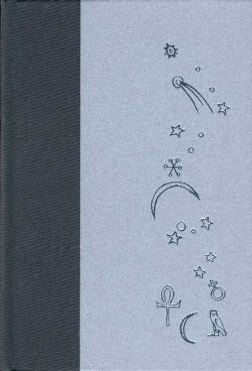
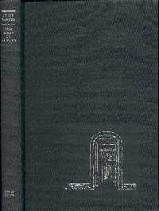
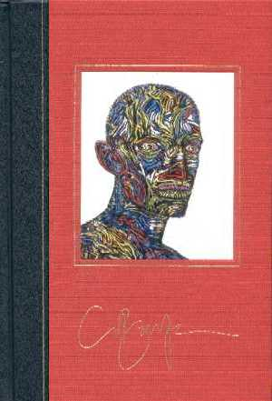
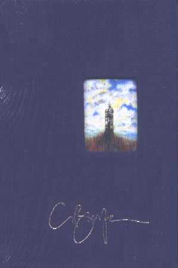
Books of Blood
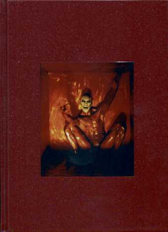
Worum es geht
Die Blutbücher sind das Sammelfeld schlechthin: signierte Dreierboxen von 1985, Lederbände von Scream Press, deutsche Phantasia-Ausgaben — und immer neue Gesamtausgaben, von der Holzbox bei Stealth bis zu den Subterranean-Kassetten von 2014.
Aus dem Archiv
-
Weidenfeld & Nicolson legte 1985 je 200 signierte Exemplare der sechs Bände auf, verkauft in Dreierboxen für 45 Pfund — heute stehen die Sets bei 300 bis 350 Dollar.
Weidenfeld & Nicolson, UK · 1985
-
Scream Press band die Bände vier bis sechs 1988 in Vollleder mit dekorierten Schubern — je 333 Exemplare, signiert von Barker und Illustrator Harry O. Morris.
Scream Press, USA · 1988
-
Stealth Press vereinte 2001 alle sechs Bände in goldgeprägtem Vollleder; die 52 Buchstaben-Exemplare kamen in einer eigens gefertigten Holzbox mit gravierter Messingplatte und zusätzlicher signierter Fotografie.
Stealth Press, USA · 2001
-
Kuriosum am Rande: Eclipse zerlegte The Book of Blood 1993 in 32 Sammelkarten — 1.000 nummerierte Sets in goldgeprägter Stoffbox, signiert von Barker und Zeichner Tristen Schane.
Clive Barker’s Box of Blood, Eclipse · 1993
Ausgewählte Ausgaben
Klick vergrößert das Cover
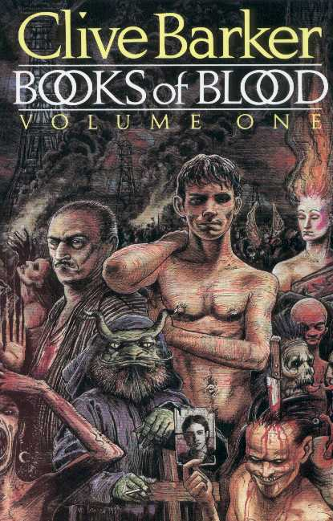
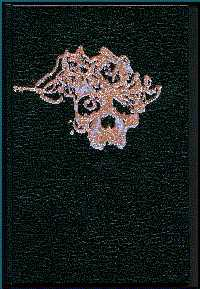
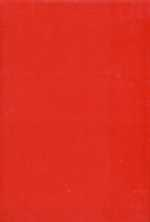
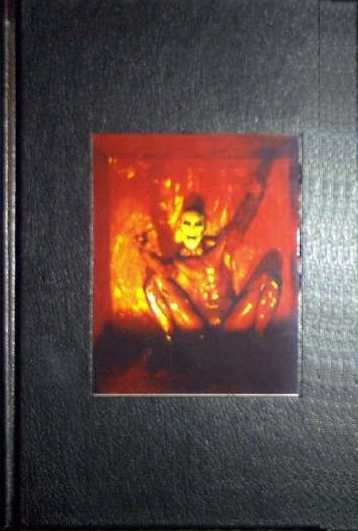
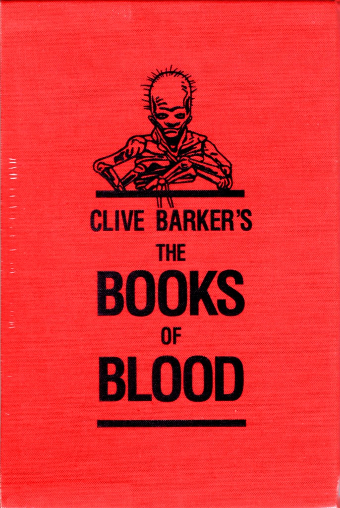
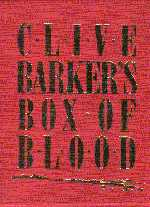
Erzählungen & Novellen
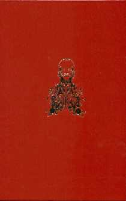
Worum es geht
Auch die kurze Form bekommt ihre Vorzugsausgaben — oft über Anthologien, in denen Barker neben Kollegen signiert: von Night Visions 3 über Prime Evil bis zu den Subterranean-Bänden der Tortured Souls und Infernal Parade.
Aus dem Archiv
-
Cabal erschien 1988 bei Poseidon in 750 signierten Exemplaren — Vollleder mit Goldprägung nach Barkers eigenem Artwork, im Schuber.
Poseidon Press, USA · 1988
-
The Hellbound Heart debütierte in Night Visions 3, herausgegeben von George R.R. Martin (400 Ex.); zum zwanzigsten Jubiläum band Earthling die Novelle in Leder — die 26 Buchstaben-Exemplare mit Original-Artwork, zusätzlich signiert von Peter Atkins und Ashley Laurence.
Dark Harvest 1986 · Earthling 2007
-
Die wertvollste Anthologie ist Prime Evil (mit Coming to Grief): Die britische 250er-Ausgabe in goldgeprägtem Vollleder, von fünfzehn Autoren signiert, steht heute bei 350 bis 450 Dollar.
Bantam Press, UK · 1988
-
Chiliad erschien 1997 in Revelations mit dreizehn weiteren Signaturen; 2013/14 holte Subterranean die Novelle, Tortured Souls und Infernal Parade als eigene nummerierte Lederbände nach.
CD Publications 1997 · Subterranean 2013–2017
Ausgewählte Ausgaben
Klick vergrößert das Cover
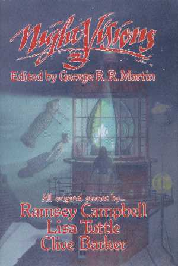
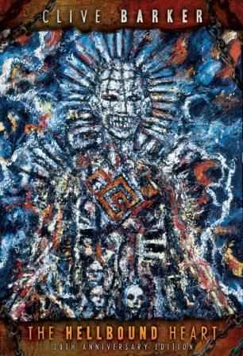
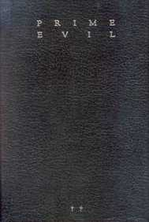
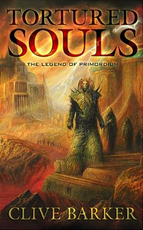
Graphic Novels
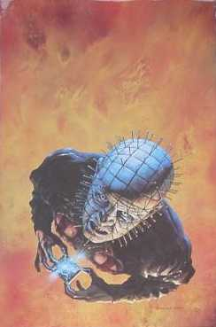
Worum es geht
Auch die Comic-Adaptionen erschienen limitiert: die Hellraiser-Bände von Graffitti Designs mit den Signaturen der Zeichner, die Eclipse-Ausgabe von The Yattering and Jack — und Ledersammelbände von Checker mit sinnigen Auflagenzahlen.
Aus dem Archiv
-
Graffitti Designs legte die drei Hellraiser-Bände 1990 doppelt auf: je 500 von Barker und den Künstlern — Simon Bisley, John Bolton, Scott Hampton, Ted McKeever — signierte Exemplare, dazu größere Auflagen nur mit den Künstler-Signaturen.
Graffitti Designs, USA · 1990
-
Checker band 2002 die Sammelbände in Leder — Tapping the Vein in einer Auflage mit Ansage: 666 Exemplare.
Checker, USA · 2002
-
IDWs Comic-Fassung von The Thief of Always erschien 2005 auch als von Barker signierte 500er-Ausgabe.
IDW, USA · 2005
Ausgewählte Ausgaben
Klick vergrößert das Cover
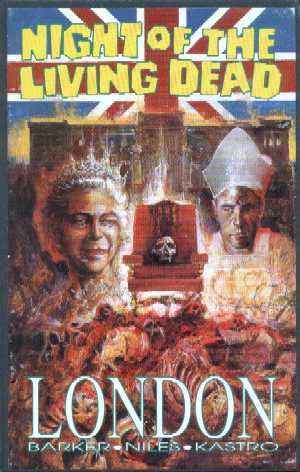
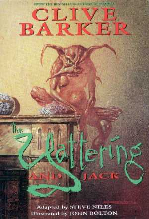
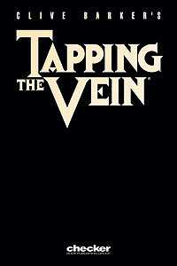
Beiträge & verwandte Bücher
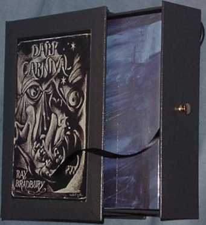
Worum es geht
Wo Barker Vorworte schreibt, folgen Vorzugsausgaben: Bradburys Dark Carnival, Miévilles King Rat, Gigers Necronomicon oder die Anthologien der Achtziger — Bücher, in denen seine Signatur neben denen der Autoren und Künstler steht.
Aus dem Archiv
-
Für die Gauntlet-Ausgabe von Dark Carnival signierten Barker und Ray Bradbury gemeinsam: 700 nummerierte Exemplare samt Bradbury-Chapbook, dazu 52 Buchstaben-Exemplare für 1.000 Dollar.
Gauntlet Press, USA · 2001
-
Von Earthlings King Rat existieren nur 15 Buchstaben-Exemplare — handgebunden in Ziegenleder, signiert von Barker, China Miéville und Richard Kirk.
Earthling Publications, USA · 2005
-
Gigers Necronomicon, mit Barkers Einleitung, erschien bei Morpheus in einer Auflage, die zum Haus passt: 666 Exemplare in Vollleder, signiert vom Künstler.
Morpheus International · 1992
-
Und in den Anthologie-Klassikern der Achtziger — Night Visions 4, Scared Stiff, Silver Scream — steht Barkers Name neben Koontz, Campbell und McCammon auf den Signaturseiten.
Dark Harvest · Scream Press · 1986–1988
Ausgewählte Ausgaben
Klick vergrößert das Cover
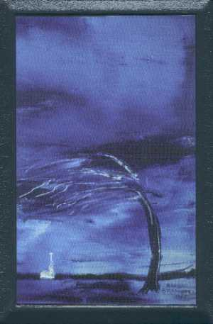
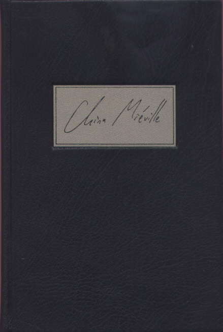
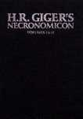
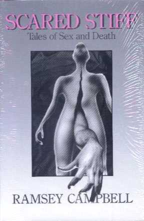
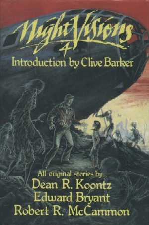
Original-Kunst in den Limitierten
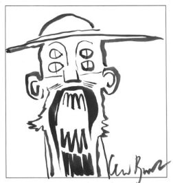
Worum es geht
Die Königsklasse der Limitierten: Ausgaben, in die Barker in jedes einzelne Exemplar eine Original-Skizze zeichnet. Den Anfang machte 1990 der Illustrator-Band mit über 200 verschiedenen Zeichnungen — seither macht jede Skizze ihr Exemplar zum Unikat.
Aus dem Archiv
-
Im 200er-Schuberband von Illustrator (Arcane/Eclipse, 1990) zeichnete Barker in ein vorgedrucktes Feld der Limitierungsseite — mehr als 200 verschiedene Skizzen, die das Archiv seit Jahren nachverfolgt und katalogisiert.
Arcane / Eclipse, USA · 1990
-
Für die 50 Deluxe-Exemplare von Abarat entstand je eine ganzseitige Originalskizze gegenüber der Limitierungsseite — 2004 wiederholt für Days of Magic, Nights of War.
B.E. Trice, USA · 2002–2004
-
Seither gehört die einmontierte Originalzeichnung zum Standard der Buchstaben-Ausgaben: The Hellbound Heart, Maximillian Bacchus, The Painter, The Midnight Meat Train, The Body Book und Tonight, Again.
Revelations-Archiv · Original Sketches
Skizzen aus den Ausgaben
Klick vergrößert das Bild
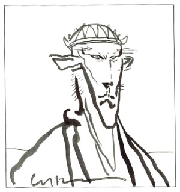
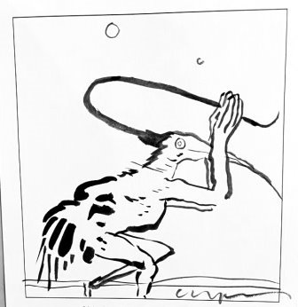
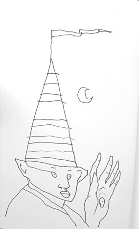
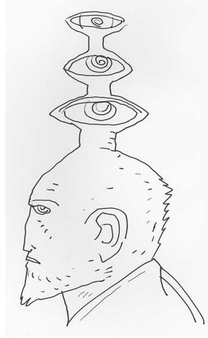
Cover-Abbildungen: Revelations-Archiv (clivebarker.info) · Artwork © Clive Barker bzw. der jeweiligen Verlage